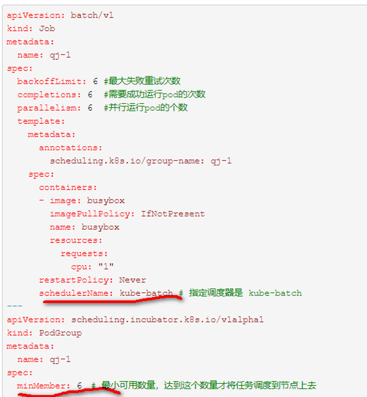
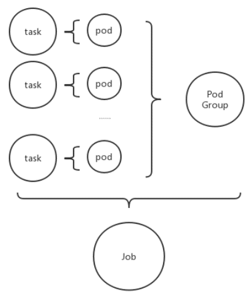
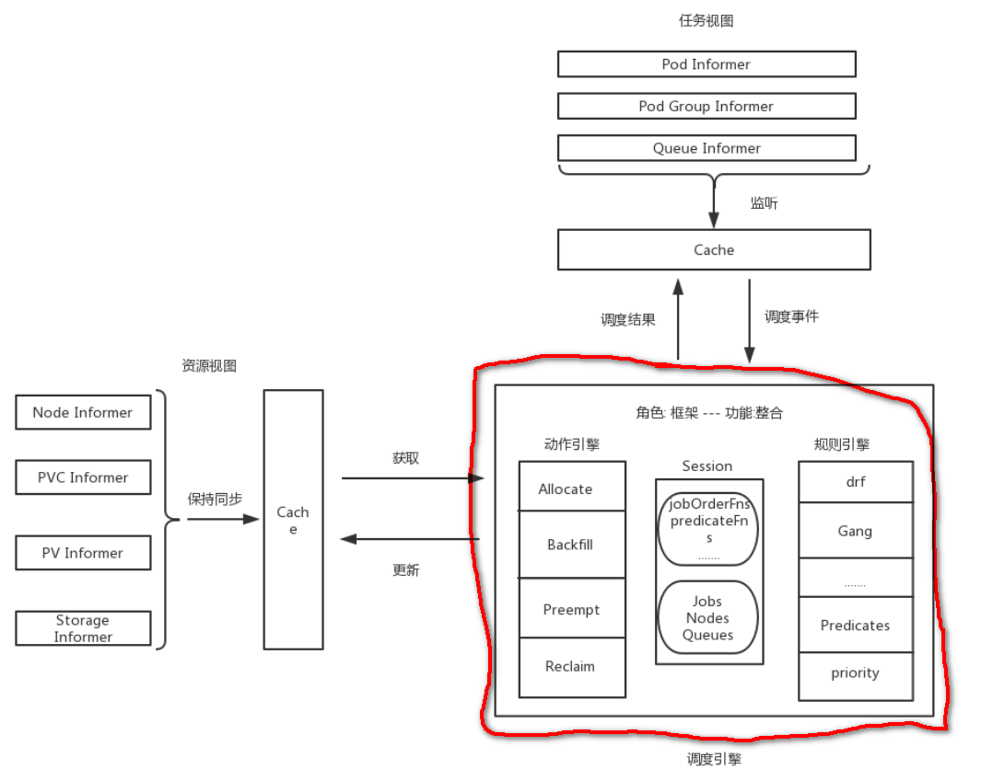
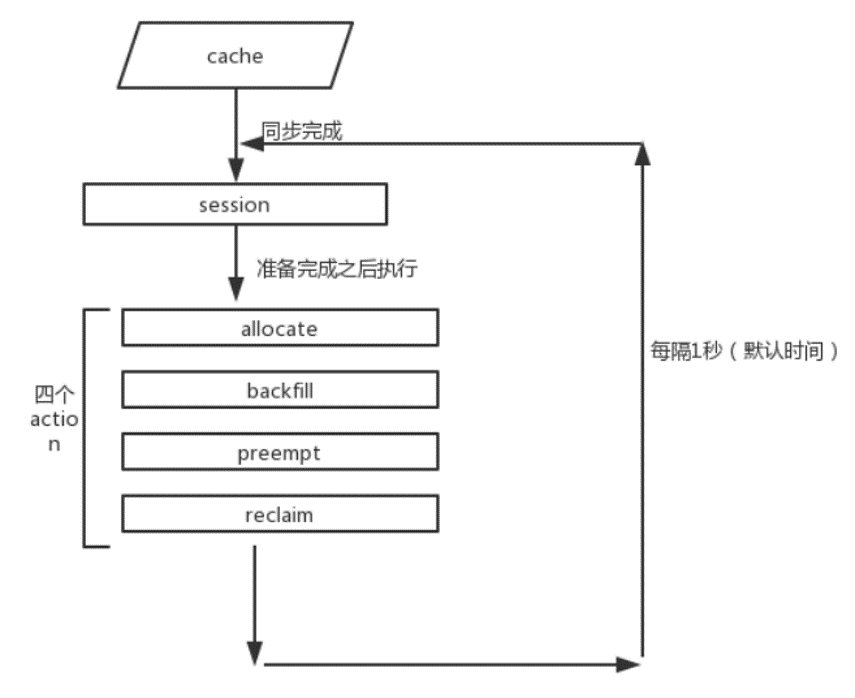
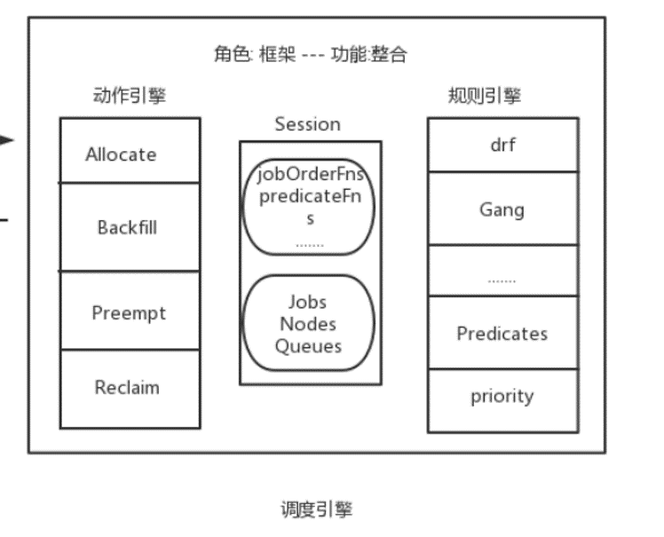

kube-batch--简介
1.背景介绍
K8s本身的调度器具有一些缺陷：
（1） 默认的调度器是以 pod 为粒度的，对机器学习任务很不利。
（2）默认的调度器无法提供队列调度的功能
2.kube-batch介绍
Kube-batch 目前是 Kubernetes SIGs 旗下的一个孵化项目，是一个运行在 Kubernetes 上面向机器学习 / 大数据 /HPC 的批调度器（batch scheduler）。kubeflow中gang scheduler的实现就使用的是kube-batch.
3.Kube-batch 关注点
“Batch” scheduling
Resource sharing between multi-tenant
4.Kube-batch 的使用方式

5.Kube-batch的调度的单位

一个task对应一个pod
一个job对应一个或多个task
一个job对应一个pod group
PodGroup记录该job内的pod的状态
6.kube-batch中的概念
6.1podgroup
简单理解：一个PodGroup就是一个job中的所有Pod
|
|
6.2queue
简单理解：一个queue就是一个namespace(租户)
|
|
7.kube-batch原理和流程

kube-batch的结果如上图所示，红圈是Kube-batch负责的事情。
8.Kube-batch的调度流程

kube-batch每个一秒开启一轮调度，然后依次执行四个action。
9.Actions介绍
9.1Allocate：作业调度
调度流程：
（1）将kube-batch的job放入对应的队列。这是一个具有优先级的队列。
（2）依次遍历这些队列，如果为空就跳过
（3）如果不为空，依次从队列中pop出一个job.即接下来要调度这个job
（4）取出这个job对应的所有Tasks(即要绑定的pod),对每个task进行假绑定,这里的假绑定意思是 只是更新task的状态，先记录pod绑定在哪个节点上。当达到JobReady时，进行真正的绑定。这样就实现了一次性绑定了好几个Pod.
（5）更新job的信息，将pod重新加入队列。跳出循环，再次进行调度。
9.2Reclaim: 回收满足条件的pod
9.3Backfill: 回填
backfill是为了处理BestEffort后加的action，相关issue。
https://github.com/kubernetes-sigs/kube-batch/issues/409
https://www.jianshu.com/p/4c0763967b3c
9.4Preempt: 抢占
实现抢占功能。但是每次只能抢占一个pod
https://github.com/volcano-sh/volcano/issues/377
10.Kube-batch调度逻辑

每次开启一个回话，然后指向四个动作，每个动作会需要一些功能函数，这个由def,gang提供。
例如：在allocate阶段，判断一个job ready的时候才会真正的绑定。而判断jobready的函数是gang 插件提供的。只有job中指定的pod数都准备好，才真正绑定。
11.常见的plugin
11.1DRF (Dominant Resource Fairness)
根据主要资源（cpu,memory,gpu）的均衡算法。
定义的plugin function:
jobOrderFn 是job的排序函数，会让share值越小的job排在最前面，即拥有最高的优先级，这个是实现DRF算法的关键。
preemptableFn 返回可抢占的job列表，job的筛选规则是 ：如果待选job的share值大于将被调度的job的share值，则选中该待选job。
11.2gang
实现的功能: 只有当指定的某几个pod都分配到资源后，才正在地将pod调度到节点上.
定义的plugin function:
preemptableFn 为避免Gang的策略被preempt 和 reclaiｍ干扰，定义了preemptableFn,排除那些还未准备就绪的job，避免被抢占。虽然实际上这些job未真正调度到node上去，但是确实从逻辑上把资源分配给它了
jobOrderFn 为让已经就绪的job尽快被调度到节点，定义了jobOrderFn ,让已经就绪的job拥有更高的优先级
jobReadyFn 用来判断一个job是否已经就绪。
11.3Proportion
实现了队列资源的分配
定义的plugin function:
QueueOrderFn：会决定哪一个队列里的job在调度时会被优先考虑,这里沿用了DRF处jobOrderFn的逻辑，即share值最小的queue 会最优先被考虑.
OverusedFn：判断queue的资源使用是否已经超出限制了，即 allocated > deserved == true
ReclaimableFn：判断一个task是否可以被召回，如果召回之后使得已经分配到的资源小于等于deserved 就不应该被召回。
12.总结
（1）Kube-batch如何Gang-Scheduler a. 增加一个PodGruop的CRD。调度以PodGroup为单位。同时对应还有一个PodGroupController进行PodGroup的管理
b. 整个调度过程采用延迟创建Pod的过程。只有当PodGroup中的所有Pod都有合适的Node绑定时，才开始创建
c. 定义了一种新的Action-BackFill.当PodGroup还有Pod没绑定时，之前绑定Pod的资源会释放。
(2) Kube-batch如何共享多租户资源
a. 多租户的实现：Queue + Namespace
b. 租户间资源的共享：每个租户对应一个Namespace，以及一个Queue.每个Namespace的资源是按比例分配的。
13.优缺点
优点：
Gang Scheduler 的调度方式
多租户的设计思想
缺点：
和默认的调度器冲突
没有优选就没有soft亲和性目前还是孵化项目，文档不全面，特别是多租户这块，没有实例以及文档